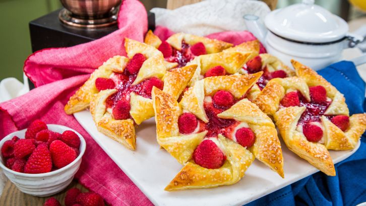
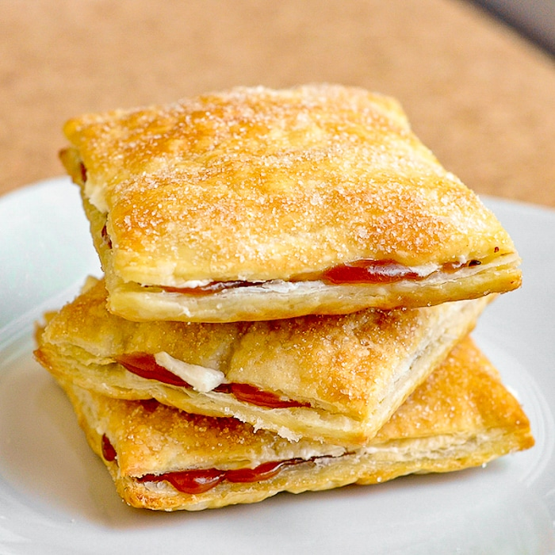

Raspberry Cream Cheese Pinwheel Pastries

Vanilla-Caramel-Puff-Pastries-photo-of-3-pastries-stacked-on-a-white-plate
Raspberry Cream Cheese Pinwheel Pastries


Pastries
Pastry is a dough of flour, water and shortening that may be savoury or sweetened. Sweetened pastries are often described as bakers' confectionery. The word "pastries" suggests many kinds of baked products made from ingredients such as flour, sugar, milk, butter, shortening, baking powder, and eggs.
Cakes
Cake is a form of sweet food that is usually baked. In their oldest forms, cakes were modifications of breads, but cakes now cover a wide range of preparations that can be simple or elaborate, and that share features with other desserts such as pastries, meringues, custards, and pies